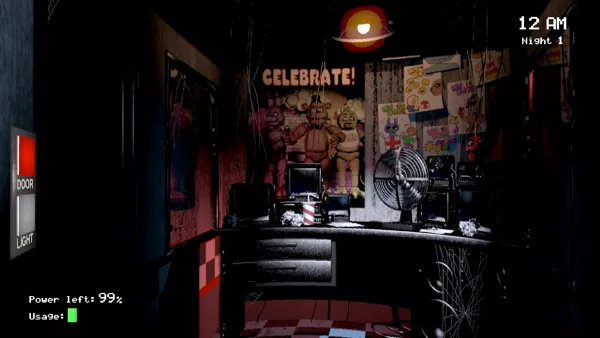
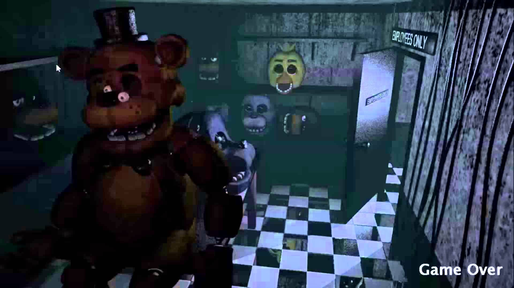
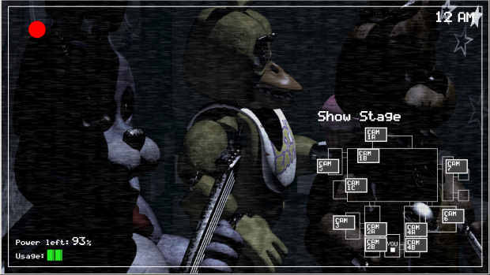

Five Nights at Freddy's
Home
About FNAF
About FNAF and Screenshots
Five Nights at Freddy's is an indie horror game created in 2014 by Scott Cawthon.
FNAF Screenshots
  
FNAF Information
FNAF Wiki
FNAF Website